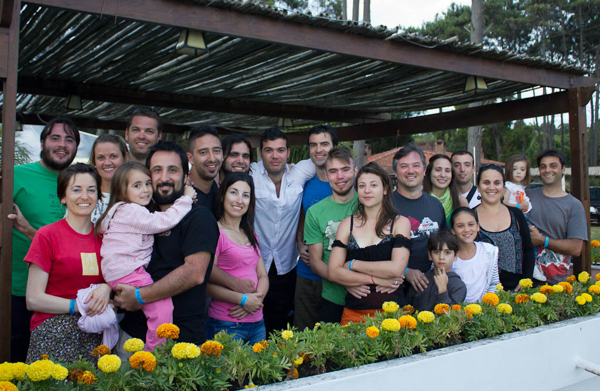
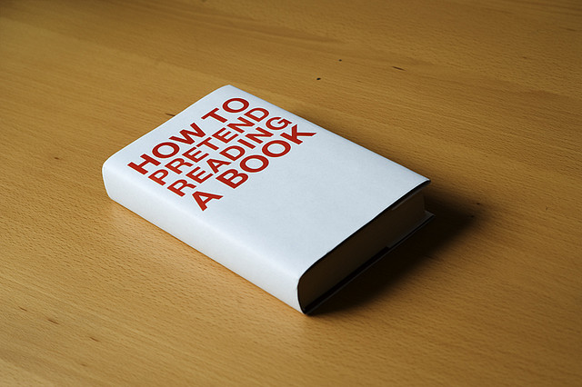
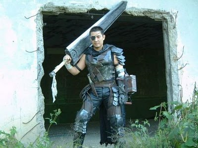

Jak sie masz?







The best way to predict the future is to invent it.Alan Key
Those who do not understand Unix are condemned to reinvent it, poorly...Henry Spencer


The most powerfull optimization technique in any programmer's toolbox is do nothing.Eric Steven Raymond
Losers live in the past. Winners learn from the past and enjoy working in the present toward the future.Denis Waitley
The best way to predict the future is to invent it.Alan Key
Prototype, then polish. Get it working before you optimize it.Rob Pike
Measure. Don't tune for speed until you've measured (...)Rob Pike
Fancy algorithms are buggier than simple ones, and (...) harder to implement. Use simple algorithms as well as simple data structures.Rob Pike
Stairway to the programmer's heaven goes through the Cloud.Me :)